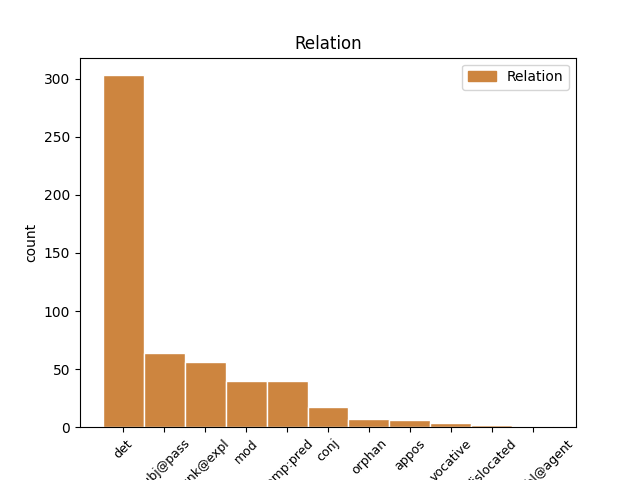
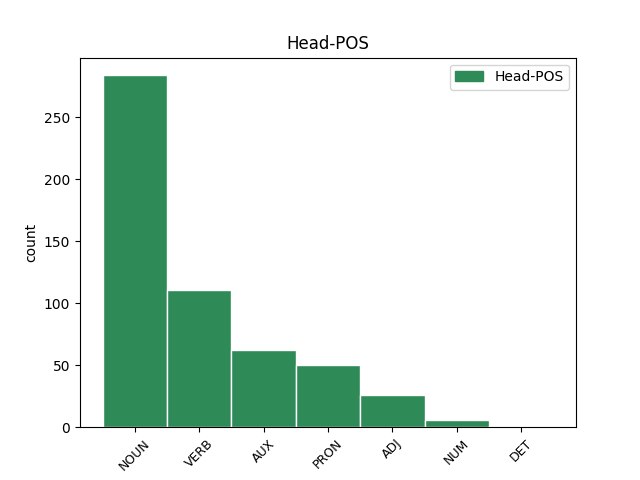
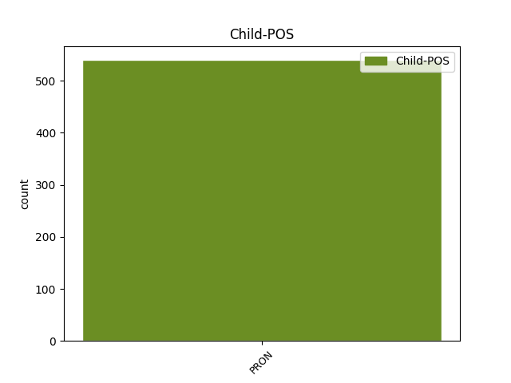

Distribution of features within this leaf



Agreement Rules sorted by frequency.
- When the dependent token is the determiner(det) of the head token, and the dependent token is PRON.
1 in _ _ _ _ 0 _ _ _
2 þizozei saei PRON Pr Case=Gen|Gender=Fem|Number=Sing|PronType=Rel 3 det _ ref=TIT_1.13
3 fairinos fairina NOUN Nb Case=Gen|Gender=Fem|Number=Sing 0 _ _ _
4 gasak _ _ _ _ 0 _ _ _
5 ins _ _ _ _ 0 _ _ _
6 ƕassaba _ _ _ _ 0 _ _ _
7 ei _ _ _ _ 0 _ _ _
8 hailai _ _ _ _ 0 _ _ _
9 sijaina _ _ _ _ 0 _ _ _
10 in _ _ _ _ 0 _ _ _
11 galaubeinai _ _ _ _ 0 _ _ _
12 ni _ _ _ _ 0 _ _ _
13 atsaiƕandans _ _ _ _ 0 _ _ _
14 judaiwiskaize _ _ _ _ 0 _ _ _
15 spilli _ _ _ _ 0 _ _ _
16 jah _ _ _ _ 0 _ _ _
17 anabusne _ _ _ _ 0 _ _ _
18 manne _ _ _ _ 0 _ _ _
19 afwandjandane _ _ _ _ 0 _ _ _
20 sis _ _ _ _ 0 _ _ _
21 sunja _ _ _ _ 0 _ _ _
1 sind _ _ _ _ 0 _ _ _
2 auk _ _ _ _ 0 _ _ _
3 managai _ _ _ _ 0 _ _ _
4 ungaƕairbai _ _ _ _ 0 _ _ _
5 lausaiwaurdai _ _ _ _ 0 _ _ _
6 lutondans _ _ _ _ 0 _ _ _
7 þishun _ _ _ _ 0 _ _ _
8 þai _ _ _ _ 0 _ _ _
9 us _ _ _ _ 0 _ _ _
10 bimaita _ _ _ _ 0 _ _ _
11 þanzei _ _ _ _ 0 _ _ _
12 skal _ _ _ _ 0 _ _ _
13 gasakan _ _ _ _ 0 _ _ _
14 þaiei _ _ _ _ 0 _ _ _
15 gardins _ _ _ _ 0 _ _ _
16 allans _ _ _ _ 0 _ _ _
17 uswaltjand _ _ _ _ 0 _ _ _
18 laisjandans _ _ _ _ 0 _ _ _
19 þatei saei PRON Pr Case=Nom|Gender=Neut|Number=Sing|PronType=Rel 22 subj@pass _ ref=TIT_1.11
20 ni _ _ _ _ 0 _ _ _
21 skuld _ _ _ _ 0 _ _ _
22 ist wisan AUX V- Mood=Ind|Number=Sing|Person=3|Tense=Pres|VerbForm=Fin|Voice=Act 0 _ _ _
23 in _ _ _ _ 0 _ _ _
24 faihugairneins _ _ _ _ 0 _ _ _
1 in _ _ _ _ 0 _ _ _
2 þizozei _ _ _ _ 0 _ _ _
3 fairinos _ _ _ _ 0 _ _ _
4 gasak _ _ _ _ 0 _ _ _
5 ins _ _ _ _ 0 _ _ _
6 ƕassaba _ _ _ _ 0 _ _ _
7 ei _ _ _ _ 0 _ _ _
8 hailai _ _ _ _ 0 _ _ _
9 sijaina _ _ _ _ 0 _ _ _
10 in _ _ _ _ 0 _ _ _
11 galaubeinai _ _ _ _ 0 _ _ _
12 ni _ _ _ _ 0 _ _ _
13 atsaiƕandans _ _ _ _ 0 _ _ _
14 judaiwiskaize _ _ _ _ 0 _ _ _
15 spilli _ _ _ _ 0 _ _ _
16 jah _ _ _ _ 0 _ _ _
17 anabusne _ _ _ _ 0 _ _ _
18 manne _ _ _ _ 0 _ _ _
19 afwandjandane af-wandjan VERB V- Case=Gen|Gender=Masc,Neut|Number=Plur|Strength=Weak|Tense=Pres|VerbForm=Part|Voice=Act 0 _ _ _
20 sis sik PRON Pk Case=Dat|Gender=Masc|Number=Plur|Person=3|PronType=Prs|Reflex=Yes 19 unk@expl _ ref=TIT_1.14
21 sunja _ _ _ _ 0 _ _ _
1 ƕa ƕas PRON Pi Case=Nom|Gender=Neut|Number=Sing|PronType=Int 3 comp:pred _ ref=1THESS_2.19
2 auk _ _ _ _ 0 _ _ _
3 ist wisan AUX V- Mood=Ind|Number=Sing|Person=3|Tense=Pres|VerbForm=Fin|Voice=Act 0 _ _ _
4 unsara _ _ _ _ 0 _ _ _
5 wens _ _ _ _ 0 _ _ _
6 aiþþau _ _ _ _ 0 _ _ _
7 faheþs _ _ _ _ 0 _ _ _
8 aiþþau _ _ _ _ 0 _ _ _
9 waips _ _ _ _ 0 _ _ _
10 ƕoftuljos _ _ _ _ 0 _ _ _
11 niu _ _ _ _ 0 _ _ _
12 jus _ _ _ _ 0 _ _ _
13 in _ _ _ _ 0 _ _ _
14 andwairþja _ _ _ _ 0 _ _ _
15 fraujins _ _ _ _ 0 _ _ _
16 unsaris _ _ _ _ 0 _ _ _
17 Iesuis _ _ _ _ 0 _ _ _
18 Xristaus _ _ _ _ 0 _ _ _
19 in _ _ _ _ 0 _ _ _
20 is _ _ _ _ 0 _ _ _
21 quma _ _ _ _ 0 _ _ _
1 þaþroh _ _ _ _ 0 _ _ _
2 galagiþs _ _ _ _ 0 _ _ _
3 ist _ _ _ _ 0 _ _ _
4 mis _ _ _ _ 0 _ _ _
5 waips _ _ _ _ 0 _ _ _
6 garaihteins _ _ _ _ 0 _ _ _
7 þanei _ _ _ _ 0 _ _ _
8 usgibiþ us-giban VERB V- Mood=Ind|Number=Sing|Person=3|Tense=Pres|VerbForm=Fin|Voice=Act 0 _ _ _
9 mis _ _ _ _ 0 _ _ _
10 frauja _ _ _ _ 0 _ _ _
11 in _ _ _ _ 0 _ _ _
12 jainamma _ _ _ _ 0 _ _ _
13 daga _ _ _ _ 0 _ _ _
14 sa _ _ _ _ 0 _ _ _
15 garaihta _ _ _ _ 0 _ _ _
16 staua _ _ _ _ 0 _ _ _
17 aþþan _ _ _ _ 0 _ _ _
18 ni _ _ _ _ 0 _ _ _
19 þatainei _ _ _ _ 0 _ _ _
20 mis ik PRON Pp Case=Dat|Gender=Masc|Number=Sing|Person=1|PronType=Prs 8 conj _ ref=2TIM_4.8
21 ak _ _ _ _ 0 _ _ _
22 jah _ _ _ _ 0 _ _ _
23 allaim _ _ _ _ 0 _ _ _
24 þaiei _ _ _ _ 0 _ _ _
25 frijond _ _ _ _ 0 _ _ _
26 qum _ _ _ _ 0 _ _ _
27 is _ _ _ _ 0 _ _ _
1 mis _ _ _ _ 0 _ _ _
2 þamma _ _ _ _ 0 _ _ _
3 undarleijin _ _ _ _ 0 _ _ _
4 allaize _ _ _ _ 0 _ _ _
5 þize _ _ _ _ 0 _ _ _
6 weihane _ _ _ _ 0 _ _ _
7 atgibana _ _ _ _ 0 _ _ _
8 warþ _ _ _ _ 0 _ _ _
9 ansts _ _ _ _ 0 _ _ _
10 so _ _ _ _ 0 _ _ _
11 in _ _ _ _ 0 _ _ _
12 þiudom _ _ _ _ 0 _ _ _
13 wailamerjan _ _ _ _ 0 _ _ _
14 þo _ _ _ _ 0 _ _ _
15 unfairlaistidon _ _ _ _ 0 _ _ _
16 gabein _ _ _ _ 0 _ _ _
17 Xristaus _ _ _ _ 0 _ _ _
18 in _ _ _ _ 0 _ _ _
19 guda _ _ _ _ 0 _ _ _
20 þamma _ _ _ _ 0 _ _ _
21 alla _ _ _ _ 0 _ _ _
22 gaskapjandin _ _ _ _ 0 _ _ _
23 ei _ _ _ _ 0 _ _ _
24 kanniþ _ _ _ _ 0 _ _ _
25 wesi _ _ _ _ 0 _ _ _
26 nu _ _ _ _ 0 _ _ _
27 reikjam _ _ _ _ 0 _ _ _
28 jah _ _ _ _ 0 _ _ _
29 waldufnjam _ _ _ _ 0 _ _ _
30 in _ _ _ _ 0 _ _ _
31 þaim _ _ _ _ 0 _ _ _
32 himinakundam _ _ _ _ 0 _ _ _
33 þairh _ _ _ _ 0 _ _ _
34 aikklesjon _ _ _ _ 0 _ _ _
35 so _ _ _ _ 0 _ _ _
36 filufaiho _ _ _ _ 0 _ _ _
37 handugei _ _ _ _ 0 _ _ _
38 gudis _ _ _ _ 0 _ _ _
39 bi _ _ _ _ 0 _ _ _
40 muna _ _ _ _ 0 _ _ _
41 aiwe _ _ _ _ 0 _ _ _
42 þanei _ _ _ _ 0 _ _ _
43 gatawida _ _ _ _ 0 _ _ _
44 in _ _ _ _ 0 _ _ _
45 Xristau _ _ _ _ 0 _ _ _
46 Iesu _ _ _ _ 0 _ _ _
47 fraujin _ _ _ _ 0 _ _ _
48 unsaramma _ _ _ _ 0 _ _ _
49 in _ _ _ _ 0 _ _ _
50 þammei _ _ _ _ 0 _ _ _
51 habam _ _ _ _ 0 _ _ _
52 balþein _ _ _ _ 0 _ _ _
53 jah _ _ _ _ 0 _ _ _
54 atgagg _ _ _ _ 0 _ _ _
55 in _ _ _ _ 0 _ _ _
56 trauainai _ _ _ _ 0 _ _ _
57 þairh _ _ _ _ 0 _ _ _
58 galaubein galaubeins NOUN Nb Case=Acc|Gender=Fem|Number=Sing 0 _ _ _
59 is is PRON Pp Case=Gen|Gender=Masc|Number=Sing|Person=3|PronType=Prs 58 mod _ ref=EPH_3.12
1 aþþan _ _ _ _ 0 _ _ _
2 nu _ _ _ _ 0 _ _ _
3 at _ _ _ _ 0 _ _ _
4 qimandin _ _ _ _ 0 _ _ _
5 Teimauþaiu _ _ _ _ 0 _ _ _
6 at _ _ _ _ 0 _ _ _
7 unsis _ _ _ _ 0 _ _ _
8 fram _ _ _ _ 0 _ _ _
9 izwis _ _ _ _ 0 _ _ _
10 jah _ _ _ _ 0 _ _ _
11 gateihandin _ _ _ _ 0 _ _ _
12 uns _ _ _ _ 0 _ _ _
13 galaubein _ _ _ _ 0 _ _ _
14 jah _ _ _ _ 0 _ _ _
15 friaþwa _ _ _ _ 0 _ _ _
16 izwara _ _ _ _ 0 _ _ _
17 jah _ _ _ _ 0 _ _ _
18 þatei _ _ _ _ 0 _ _ _
19 gaminþi _ _ _ _ 0 _ _ _
20 unsar _ _ _ _ 0 _ _ _
21 habaiþ _ _ _ _ 0 _ _ _
22 god _ _ _ _ 0 _ _ _
23 sinteino _ _ _ _ 0 _ _ _
24 gairnjandans _ _ _ _ 0 _ _ _
25 uns _ _ _ _ 0 _ _ _
26 gasaiƕan _ _ _ _ 0 _ _ _
27 swaswe _ _ _ _ 0 _ _ _
28 jah _ _ _ _ 0 _ _ _
29 weis weis PRON Pp Case=Nom|Gender=Masc|Number=Plur|Person=1|PronType=Prs 0 _ _ _
30 izwis jūs PRON Pp Case=Acc|Gender=Masc|Number=Plur|Person=2|PronType=Prs 29 orphan _ ref=1THESS_3.6
31 in _ _ _ _ 0 _ _ _
32 uh _ _ _ _ 0 _ _ _
33 þis _ _ _ _ 0 _ _ _
34 gaþrafstidai _ _ _ _ 0 _ _ _
35 sijum _ _ _ _ 0 _ _ _
36 broþrjus _ _ _ _ 0 _ _ _
37 fram _ _ _ _ 0 _ _ _
38 izwis _ _ _ _ 0 _ _ _
39 ana _ _ _ _ 0 _ _ _
40 allai _ _ _ _ 0 _ _ _
41 nauþai _ _ _ _ 0 _ _ _
42 jah _ _ _ _ 0 _ _ _
43 aglon _ _ _ _ 0 _ _ _
44 unsarai _ _ _ _ 0 _ _ _
45 in _ _ _ _ 0 _ _ _
46 izwaraizos _ _ _ _ 0 _ _ _
47 galaubeinais _ _ _ _ 0 _ _ _
1 qiþiþ qiþan VERB V- Mood=Ind|Number=Plur|Person=2|Tense=Pres|VerbForm=Fin|Voice=Act 0 _ _ _
2 mis _ _ _ _ 0 _ _ _
3 jus jūs PRON Pp Case=Nom|Gender=Masc|Number=Plur|Person=2|PronType=Prs 1 vocative _ ref=GAL_4.21
4 uf _ _ _ _ 0 _ _ _
5 witoda _ _ _ _ 0 _ _ _
6 wiljandans _ _ _ _ 0 _ _ _
7 wisan _ _ _ _ 0 _ _ _
1 aþþan _ _ _ _ 0 _ _ _
2 weis weis PRON Pp Case=Nom|Gender=Masc|Number=Plur|Person=1|PronType=Prs 0 _ _ _
3 sium _ _ _ _ 0 _ _ _
4 bimait _ _ _ _ 0 _ _ _
5 weis weis PRON Pp Case=Nom|Gender=Masc|Number=Plur|Person=1|PronType=Prs 2 appos _ ref=PHIL_3.3
6 ahmin _ _ _ _ 0 _ _ _
7 guda _ _ _ _ 0 _ _ _
8 skalkinondans _ _ _ _ 0 _ _ _
9 jah _ _ _ _ 0 _ _ _
10 ƕopandans _ _ _ _ 0 _ _ _
11 in _ _ _ _ 0 _ _ _
12 Xristau _ _ _ _ 0 _ _ _
13 Iesu _ _ _ _ 0 _ _ _
14 jan _ _ _ _ 0 _ _ _
15 ni _ _ _ _ 0 _ _ _
16 in _ _ _ _ 0 _ _ _
17 leika _ _ _ _ 0 _ _ _
18 gatrauam _ _ _ _ 0 _ _ _
19 jah _ _ _ _ 0 _ _ _
20 þan _ _ _ _ 0 _ _ _
21 ik _ _ _ _ 0 _ _ _
22 habands _ _ _ _ 0 _ _ _
23 trauain _ _ _ _ 0 _ _ _
24 jah _ _ _ _ 0 _ _ _
25 in _ _ _ _ 0 _ _ _
26 leika _ _ _ _ 0 _ _ _
1 ik _ _ _ _ 0 _ _ _
2 allis _ _ _ _ 0 _ _ _
3 izwis _ _ _ _ 0 _ _ _
4 watin _ _ _ _ 0 _ _ _
5 daupja _ _ _ _ 0 _ _ _
6 iþ _ _ _ _ 0 _ _ _
7 gaggiþ _ _ _ _ 0 _ _ _
8 swinþoza _ _ _ _ 0 _ _ _
9 mis _ _ _ _ 0 _ _ _
10 þizei saei PRON Pr Case=Gen|Gender=Masc|Number=Sing|PronType=Rel 17 dislocated _ ref=LUKE_3.16
11 ik _ _ _ _ 0 _ _ _
12 ni _ _ _ _ 0 _ _ _
13 im _ _ _ _ 0 _ _ _
14 wairþs _ _ _ _ 0 _ _ _
15 andbindan _ _ _ _ 0 _ _ _
16 skaudaraip _ _ _ _ 0 _ _ _
17 skohis skohs NOUN Nb Case=Gen|Gender=Masc|Number=Sing 0 _ _ _
18 is _ _ _ _ 0 _ _ _
Disagree Examples:
1 jah _ _ _ _ 0 _ _ _
2 gasaiƕands _ _ _ _ 0 _ _ _
3 Iesus _ _ _ _ 0 _ _ _
4 galaubein galaubeins NOUN Nb Case=Acc|Gender=Fem|Number=Sing 0 _ _ _
5 ize is PRON Pp Case=Gen|Gender=Masc|Number=Plur|Person=3|PronType=Prs 4 det _ ref=MATT_9.2
6 qaþ _ _ _ _ 0 _ _ _
7 du _ _ _ _ 0 _ _ _
8 þamma _ _ _ _ 0 _ _ _
9 usliþin _ _ _ _ 0 _ _ _
1 jah _ _ _ _ 0 _ _ _
2 warþ _ _ _ _ 0 _ _ _
3 biþe _ _ _ _ 0 _ _ _
4 is _ _ _ _ 0 _ _ _
5 anakumbida _ _ _ _ 0 _ _ _
6 in _ _ _ _ 0 _ _ _
7 garda _ _ _ _ 0 _ _ _
8 jah _ _ _ _ 0 _ _ _
9 sai _ _ _ _ 0 _ _ _
10 managai _ _ _ _ 0 _ _ _
11 motarjos _ _ _ _ 0 _ _ _
12 jah _ _ _ _ 0 _ _ _
13 frawaurhtai _ _ _ _ 0 _ _ _
14 qimandans _ _ _ _ 0 _ _ _
15 miþanakumbidedun _ _ _ _ 0 _ _ _
16 Iesua _ _ _ _ 0 _ _ _
17 jah _ _ _ _ 0 _ _ _
18 siponjam siponeis NOUN Nb Case=Dat|Gender=Masc|Number=Plur 0 _ _ _
19 is is PRON Pp Case=Gen|Gender=Masc|Number=Sing|Person=3|PronType=Prs 18 det _ ref=MATT_9.10
1 jah _ _ _ _ 0 _ _ _
2 gaumjandans _ _ _ _ 0 _ _ _
3 Fareisaieis _ _ _ _ 0 _ _ _
4 qeþun _ _ _ _ 0 _ _ _
5 du _ _ _ _ 0 _ _ _
6 þaim _ _ _ _ 0 _ _ _
7 siponjam siponeis NOUN Nb Case=Dat|Gender=Masc|Number=Plur 0 _ _ _
8 is is PRON Pp Case=Gen|Gender=Masc|Number=Sing|Person=3|PronType=Prs 7 det _ ref=MATT_9.11
1 jah _ _ _ _ 0 _ _ _
2 urreisands _ _ _ _ 0 _ _ _
3 Iesus _ _ _ _ 0 _ _ _
4 iddja _ _ _ _ 0 _ _ _
5 afar _ _ _ _ 0 _ _ _
6 imma _ _ _ _ 0 _ _ _
7 jah _ _ _ _ 0 _ _ _
8 siponjos siponeis NOUN Nb Case=Nom|Gender=Masc|Number=Plur 0 _ _ _
9 is is PRON Pp Case=Gen|Gender=Masc|Number=Sing|Person=3|PronType=Prs 8 det _ ref=MATT_9.19
1 jabai _ _ _ _ 0 _ _ _
2 gardawaldand _ _ _ _ 0 _ _ _
3 Baiailzaibul _ _ _ _ 0 _ _ _
4 haihaitun _ _ _ _ 0 _ _ _
5 und _ _ _ _ 0 _ _ _
6 ƕan _ _ _ _ 0 _ _ _
7 filu _ _ _ _ 0 _ _ _
8 mais _ _ _ _ 0 _ _ _
9 þans _ _ _ _ 0 _ _ _
10 innakundans innakunds ADJ A- Case=Acc|Degree=Pos|Gender=Masc|Number=Plur|Strength=Weak 0 _ _ _
11 is is PRON Pp Case=Gen|Gender=Masc|Number=Sing|Person=3|PronType=Prs 10 det _ ref=MATT_10.25